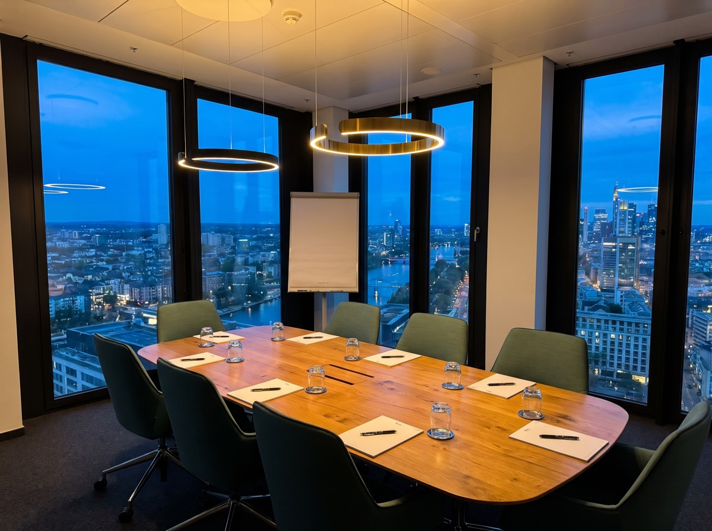
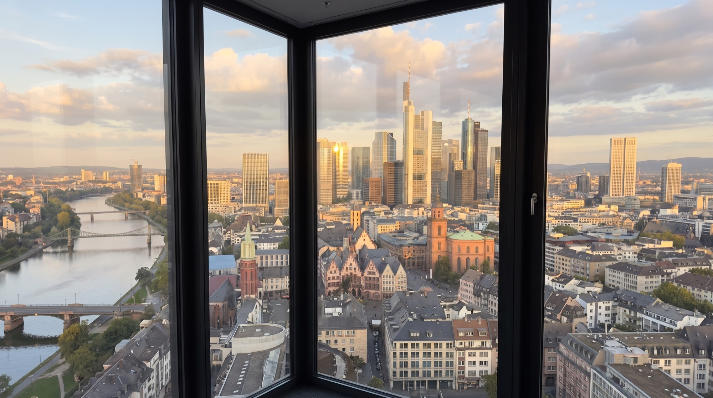
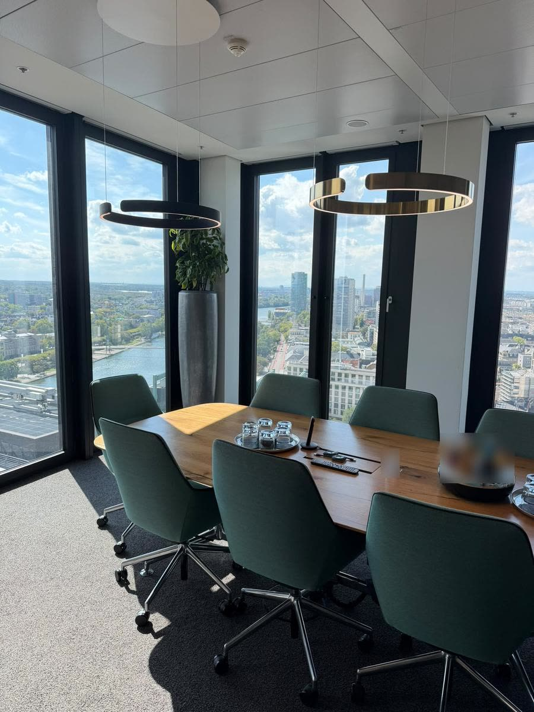
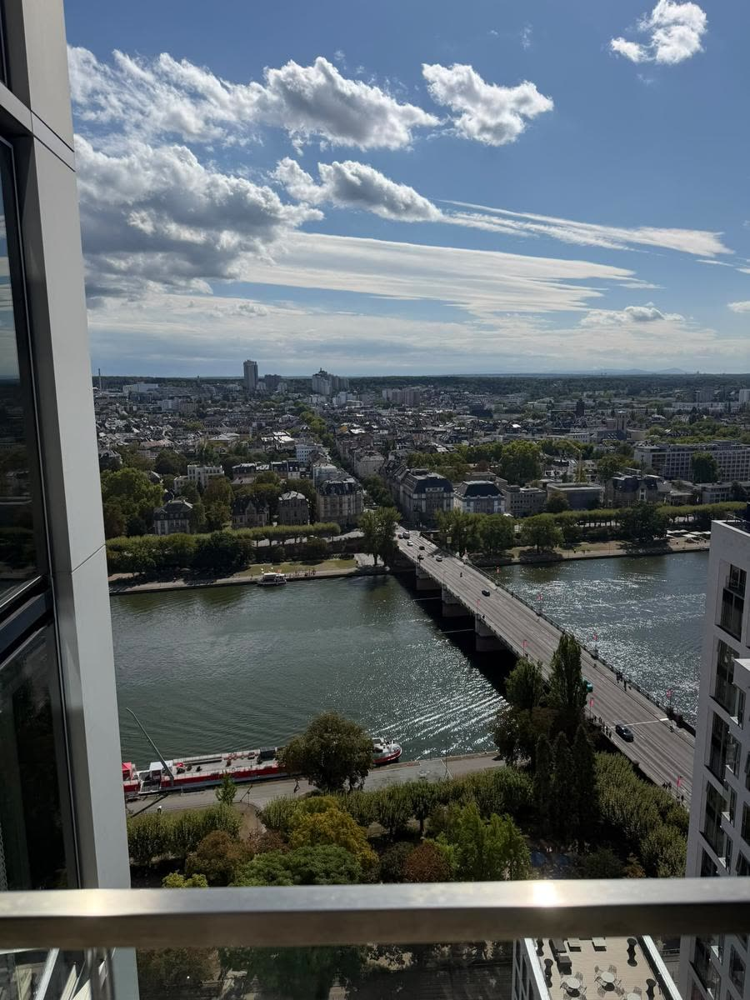
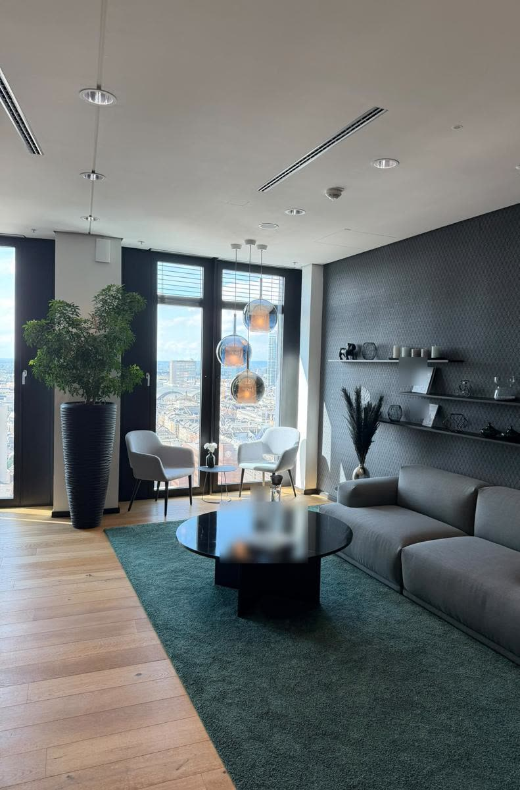
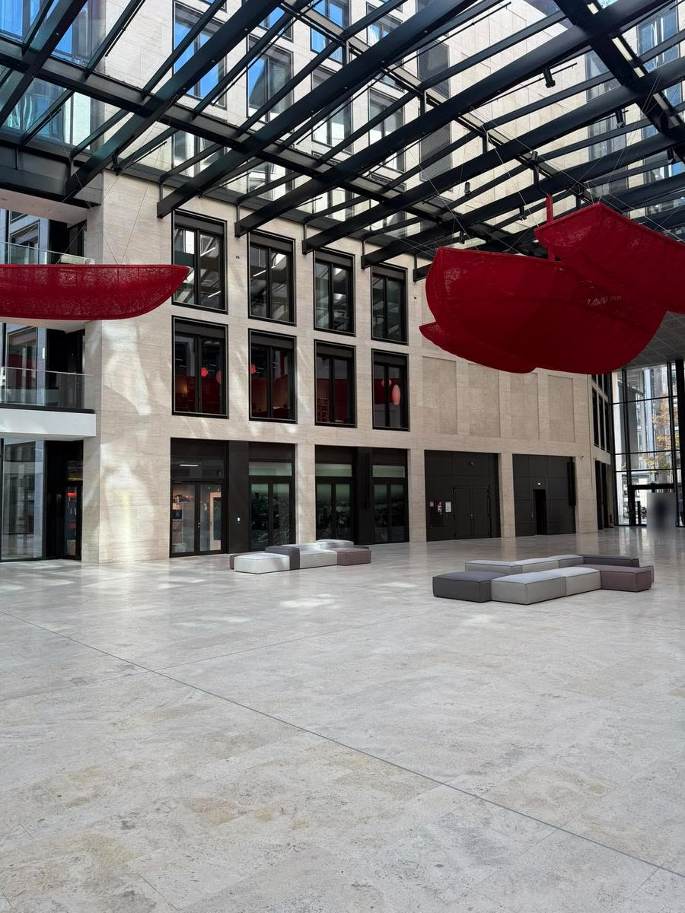

Grundlagen-Tag
Lerne Investment, Börsenhandel, Optionen und Strategie im Zusammenhang kennen. Buchst du innerhalb von 6 Monaten einen Zirkel, wird der Grundlagen-Tag voll angerechnet.
Im Raum479 €mit Mittagessen
Live online249 €Fragen am Ende

Zwei Tage im 21. Stock des WINX-Towers, direkt am Main. Höchstens 12 Plätze im Raum und 24 live online. Danach dein eigener Weg.
Präsenz jeweils 9:30–17:00 Uhr mit Mittagessen. Online live zuschauen, Fragen am Ende.

Lerne Investment, Börsenhandel, Optionen und Strategie im Zusammenhang kennen. Buchst du innerhalb von 6 Monaten einen Zirkel, wird der Grundlagen-Tag voll angerechnet.
Lerne, langfristiges Vermögen nach eigenen Regeln zu steuern und zu begründen, warum ein Unternehmen ins Depot gehört und ein anderes nicht.
Lerne kurzfristigen Börsenhandel nach einem selbst geschriebenen Regelwerk, mit festem Risikobudget und wiederholbaren Strategien mit Erfolgskontrolle.

 Investment-Zirkel · 14.–15. Nov
Investment-Zirkel · 14.–15. NovZu zweit im Raum: 3.290 € für beide.
Zu zweit im Raum: 3.990 € für beide.
Investment-Zirkel und RainMaker-Zirkel zusammen. Im Raum mit einer persönlichen App für beide Zirkel.
Eigens für dich programmiert, mit eigenem Aussehen. Im Vorgespräch klären wir deine aktuelle Frage. Läuft auf Handy, Tablet und Computer. Übergabe an Tag 2, 2 Monate App-Pflege inklusive.
Platz anfragenNach den Zirkeln geht es im Mentoring weiter: allein mit René oder zu zweit im Tandem.
Dieselbe Ausbildung wie im Einzelmentoring, mit einer zweiten Perspektive neben dir und getrennten eigenen Ergebnissen.
Die eigene Strategie in sechs Zyklen bis zur Anwendungsreife ausarbeiten, an den eigenen Zahlen, nicht an Beispielen.
Updates und eine neue Funktion je Quartal für deine persönliche App. Die ersten 2 Monate nach dem Zirkel sind inklusive, danach als eigener Vertrag.
Auf der einen Seite liegt der Main, auf der anderen die Skyline mit dem Commerzbank-Tower. Für Anreisende gibt es ein Zimmerkontingent mit Frühstück.


